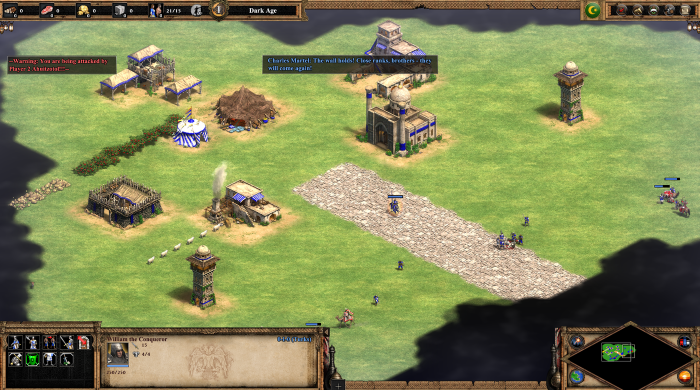
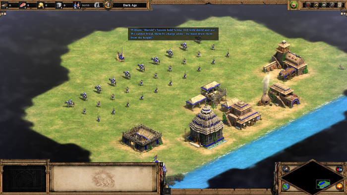

Playable History on Demand: LLM-Generated Age of Empires II Scenarios
Thomas Shin and Mark Santolucito
Taft School · Barnard College


Citation
@unpublished{shin2026playable,
title = {Playable History on Demand:
LLM-Generated Age of Empires II Scenarios},
author = {Shin, Thomas and Santolucito, Mark},
year = {2026},
note = {Working draft}
}